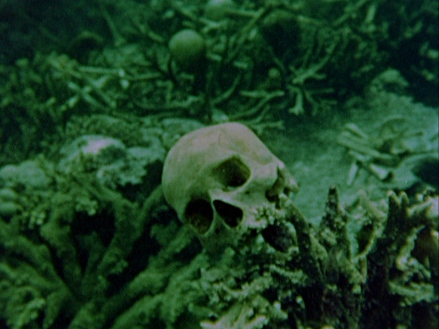
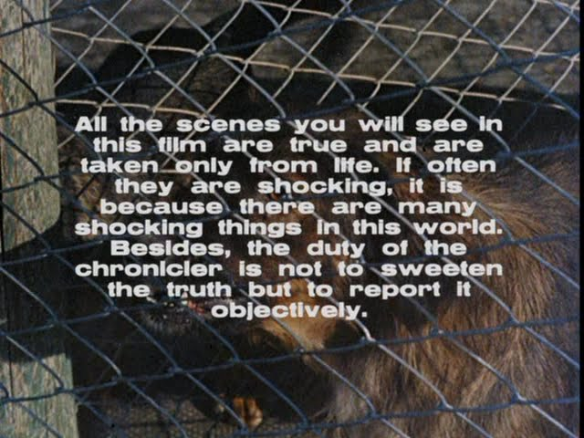
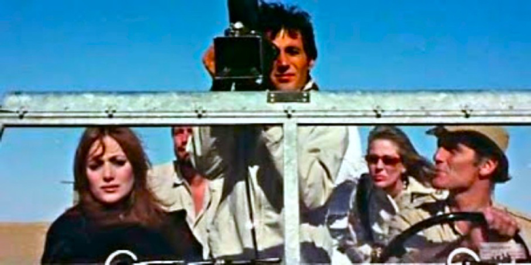

28 Aug 2026 (first published elsewhere on 8 Mar 2025)
Mondo Cane (1962): A Shocking Cabinet of Ethnographic Curiosities
Of all living beings, man is the only one who enters the world crying. Obstetricians say that crying helps the newborn breathe and activates the lungs. But, with all due respect to obstetricians, we have a different opinion: we believe that man, the only intelligent animal in creation, manifests his disappointment through tears at the new environment in which he has found himself. […] However, this protest is short-lived, lasting only a few days or weeks, and that initial impression—perhaps the truest one—will disappear beyond the reach of memory. As the newborn grows, new and false images will crowd his mind. Men and women […] will now assist him in continuing the misunderstanding; one by one, he will accept and internalise the most convenient and conventional ideas. He will learn that the world is made up of good and evil people, but that the good ones are always us, and the bad ones are always the others. He will hear talk of evolution and civilisation, and if, upon looking in the mirror, he notices he is wearing a tie, he will be convinced that he is evolved and civilised. Everything concerning him or the world around him will find in him an explanation as precise as it is presumptuous. Every “why” will have an answer, everything will be explained, everything will be logical, and if he cannot reach such conclusions himself, others will do it for him.
Mondo Cane, commonly translated as “a dog’s world”, is an infamous film, but the reason is unclear from this prologue alone. When it was released in theaters in 1962, it shocked audiences and divided critics. In the following years, it became a trendsetter, giving birth to—and lending its name to—an entire film genre: mondo movies. These are collages of highly varied and often disturbing footage, in the guise of a documentary, assembled to unsettle the viewer (hence the term emshockumentary). This means that the editing is often more contrived than faithful to reality. In other words, it is pure fiction cinema (in the etymological sense, from Latin fictiō, the act of shaping, of fashioning something), and of course it also obeys market forces. Whatever the reason, Mondo Cane was a big commercial success. It won a David di Donatello and was nominated for a Palme d’Or and for an Academy Award for Best Original Song, More by Riz Ortolani and Nino Oliviero, famously reinterpreted by Frank Sinatra and Count Basie (and even Andrea Bocelli). Its covers, both with the English, the Italian or with no lyrics, are countless.
Before its success, while it was still in production in 1961, the film’s theme was being summarised as an anthropological delight, almost as if it were a National Geographic production:
This film is a sensational documentary presenting events, customs, and folklore from all the peoples of the world.
Put this way, it could even seem like something educational, maybe even cute. And in essence, that is what it is—scenes placed one after the other and narrated in voiceover. Ethnographic sketches with descriptive captions.

The prologue at the beginning of this page appears to uphold a specific ideology, one that takes us beyond ourselves and straight into the world, moving away from the simplicity of black-and-white dualism of our societies and from their rigid interpretative dogmas.
Libraries overflow with books, millions of books […] all essentially identical in providing a conventional understanding of the surrounding world. Thousands of new films are produced each year, plays are performed, articles are written—everything has been achieved, studied, interpreted.
The directors chose “a different path”. They sought to (re)present “a world that is absolutely different and original”, the world that “every man glimpses at birth and that continues to exist even if no one thinks about it or wants to think about it”.
As a collaborative project (three different people directed it: Gualtiero Jacopetti, Franco Prosperi and Paolo Cavara), Mondo Cane naturally has multiple facets and souls. One of them—frequently highlighted in contemporary reviews I have read online—is the paternalistic and racist tone of the narration. I would have appreciated to find reviews from that era emphasising this aspect, but this research must still continue: in the 1960s, critics were more focused on two other elements. First, the film’s taste for the obscene, macabre, and grotesque (which, quite ironically, is precisely what has intrigued Millennials and Gen Z audiences, myself included). The other aspect: its betrayal of documentary rigor—of that mission that is truth, as the film’s introduction claims:

In the era of what’s generally known as trauma voyeurism and post-truth, are these the aspects we should be criticising? Today, I feel like everyone’s watching 17 different mondo movies per hour. Except these modern mondo do not necessarily follow the cynical, nihilistic, or racist ideologies of their predecessors (though I am not entirely sure about the latter). Instead, they adhere to ideologies such as hyper-spectacularisation, wild consummerism, and dehumanising political propaganda.
And the dichotomy of “civilised” vs. “primitive” is still far from dead in our century, aided by educational systems that fail to update themselves quickly enough, prolonging this misunderstanding. But personally, I took some comfort in knowing that embedded in Mondo Cane’s DNA is the acknowledgment of this truth: as interpretative categories, “sociocultural evolution” and “civilisation” are mere beliefs. For this reason, I personally find it easy to detect an underlying layer of self-irony in the way the film addresses Western moralism and taboos. This irony, as expressed by Paolo Cavara, was summarised as follows:
As we move toward the end, and as images of the primitive world give way to those bearing the mark of civilisation, we will realise that the first and the second are merely different aspects of the same reality. However, these parallels, despite their obviousness, will not lead us to judge or moralise; at most, we will confide in you the only true, comforting conclusion we have reached at the end of our modest endeavor: this is truly a dog’s world [Mondo Cane] but a dog’s world in which we all feel perfectly at home.
A small note: Paolo Cavara himself, a few years later, wanted to tell the story of a documentary filmmaker traveling around the world in constant search of staged scenes of real suffering. He did so in his film The Wild Eye (L’occhio selvaggio, 1967), where the audience sees all the questions raised during Mondo Cane made explicit. Can an eye simply be an eye when living in this world? Can it not intervene, when possible, to prevent pain and death? A valid (if predictable) answer is contained in the film’s ending. But faced with the ever-growing complexity of the world as we see it through journalism and the Internet, the questions multiply.

In considering the subject of this film—the variety of the world—it is easy to doubt whether morality plays a more important role than understanding. We live in a world of homogenisation, where we are led to believe in an aprioristic equality, where the extinction of languages and cultures is no longer only a risk but an ongoing reality, commonly ignored as much as the extinction of biological species. And despite all the means of knowledge at our disposal, we still know very little about how much the customs of different peoples are, in the end, truly the same thing at their core.
Towards the end, the film presents a scene of a group of cavemen living as in the Stone Age near Goroka, Papua New Guinea. “One generation goes, another comes, but the earth remains the same through the ages,” someone once said. And that voice-over, despite using a kind of language that today would be considered at the very least problematic, manages to capture the essence:
Here is a day, an ordinary moment from four, five, ten thousand years ago. Nothing particular happens, then as now. Everything unfolds under the eternal guidance of instinct: work, leisure, children, food, the search for communication, the need for an ordered social life.
Very touching. And then, the next scene moves 50 miles north, where "a Catholic mission marks the extreme outpost of civilisation". When irony is actually there, it’s never totally easy to tell, and that’s the problem. For sure, before reading between the lines, it’s always best to read the lines themselves first. It’s hard for me to detect a clear Christianocentric view in these words, but still, an underlying sarcasm cannot be demonstrated, so who knows?
Watching this film can be quite a philosophical (if not spiritual) challenge. For sure it is an anthropological challenge: most people don’t often watch older films, hence the “cultural shock” that can derive from thinking about what the audiences thought while watching this film more than 60 years ago. It’s not that long ago, but still, it’s a completely different cinema from the one we are used to.
And it would be fascinating to see a live reaction of a 1962 audience watching Mondo cane—someone growing curious, horrified, confused, frightened, pensive, shocked, perhaps even scandalised or outraged. In other words, someone experiencing spontaneous, biological reactions during the human act of watching a film that is both disturbing and stimulating.
And then I remember: there is already a scene in the film that, with its usual and sometimes boring cynicism, challenges, maybe a little lazily, the mechanisms of artistic production and reception. It’s the one featuring French painter Yves Klein and his Anthropométries, a scene perhaps controversial and open to any interpretation. Klein himself, after attending the premiere of Mondo Cane and seeing himself and his art depicted in a way that he didn’t expect, suffered a heart attack. He died less than a month later.